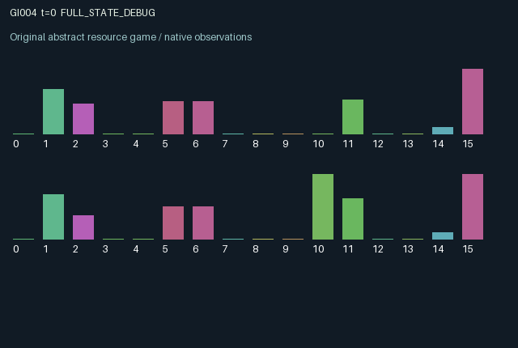

GI004 / LEGACY_ARRAY
Delayed irrigation commons
2 agents5 actions16 observation columns32 original horizonRuntime: PASS
Release verification episode
Untrained uniform legal actions. Actual JAX state sampled along the full original episode; full-state debug camera. No human performance or learning claim.

Run this game
crucibles play --game 4
Start Python locally, then open the address printed by the terminal. Installation, multiplayer, takeover and keyboard controls →
Objective, rewards & ending
Exact task contract
{
"objective": "Accumulate original per-agent rewards under the interaction rules in mechanism.md.",
"natural_termination": "No early terminal; original t >= 32 horizon.",
"exact_transition_and_reward_source": "def raw_step(self, key, state, actions):\n gate = jnp.clip(state['gate'] + 0.25 * (actions == 1) - 0.25 * (actions == 2), 0.0, 1.0)\n demand = 0.18 * gate + 0.15 * (actions == 3)\n supply = jnp.minimum(1.0, state['reservoir'] + 0.1)\n draw = demand * jnp.minimum(1.0, supply / jnp.maximum(jnp.sum(demand), 0.001))\n moisture = jnp.clip(0.82 * state['soil'] + state['pipe'], 0.0, 1.0)\n growth = 0.15 * jnp.maximum(0.0, 1.0 - jnp.abs(moisture - 0.55) / 0.4)\n ripe = jnp.minimum(1.0, state['crop'] + growth)\n harvest = ripe * (actions == 4)\n crop = ripe * (actions != 4)\n reservoir = jnp.clip(supply - jnp.sum(draw) + 0.03 * jnp.sum(actions == 2), 0.0, 1.0)\n rewards = (harvest - 0.04 * (actions == 3) - 0.02 * (actions == 4)).astype(jnp.float32)\n next_state = {\n 't': state['t'] + jnp.array(1, dtype=jnp.int32),\n 'reservoir': reservoir, 'soil': moisture, 'pipe': draw,\n 'crop': crop, 'gate': gate, 'draw': draw, 'harvest': harvest,\n }\n done_all = next_state['t'] >= 32\n dones = jnp.full((2,), done_all, dtype=jnp.bool_)\n return self.observe(next_state), next_state, rewards, dones, {\n 'done_all': done_all, 'legal_mask': self.legal_actions(next_state)}"
}Declared per-step reward bounds: -1.0 to 1.0. Observability: source_defined.
Rules
Original mechanism document (historical status wording retained)
# Delayed irrigation commons Parentless proposal; related to generic common-pool allocation and renewable-resource dilemmas. No claim of novelty or nonisomorphism is made. Actions 0 idle, 1 open a persistent gate, 2 close it and conserve water, 3 pump extra, 4 harvest. Shared finite reservoir supply proportionally rations competing requests. Allocated water enters a one-step pipe; it affects soil and crop growth only on the following transition. Moisture has an intermediate optimum, so maximum extraction can suppress one's own crop while depriving the partner. Harvest resets accumulated crop. The observation exposes shared allocation and both crop/pipe quantities but keeps the partner's soil private. Both agents change the shared reservoir and the other's later allocation. Reward is harvested crop in [0,1], minus at most one action fee (0.04 or 0.02), hence [-0.04,0.98] for reachable actions. Gates, soil, crop and pipe persist. This is a proposal only; no validation or learning claim.
Commands
0Wait
1Open irrigation gate further
2Close irrigation gate further
3Request extra water
4Harvest crop
Roles & abilities
agent_0 Original legacy agent; see mechanism and source
agent_1 Original legacy agent; see mechanism and source
Observation permissions
Training receives only the original observation rows. Role cameras use declared visibility; debug cameras are explicitly marked. Local benchmark records log debug exposure and role takeover history.
Exact observation layout
[
{
"slice": [
0,
16
],
"visibility": "exact original observe() below",
"source_code": "def observe(self, state):\n obs = jnp.zeros((2, 16), dtype=jnp.float32)\n obs = obs.at[:, 0].set(state['t'] / 32.0)\n obs = obs.at[:, 1].set(state['reservoir'])\n obs = obs.at[:, 2].set(state['soil'])\n obs = obs.at[:, 3].set(state['pipe'])\n obs = obs.at[:, 4].set(state['crop'])\n obs = obs.at[:, 5].set(state['gate'])\n obs = obs.at[:, 6].set(state['gate'][::-1])\n obs = obs.at[:, 7].set(state['draw'])\n obs = obs.at[:, 8].set(state['draw'][::-1])\n obs = obs.at[:, 9].set(state['harvest'])\n obs = obs.at[:, 10].set(jnp.arange(2, dtype=jnp.float32))\n obs = obs.at[:, 11].set(1.0 - state['soil'])\n obs = obs.at[:, 12].set(state['pipe'][::-1])\n obs = obs.at[:, 13].set(state['crop'][::-1])\n obs = obs.at[:, 14].set(0.1)\n obs = obs.at[:, 15].set(1.0)\n return obs"
}
]Entity visibility & attributes
[]
Actual verification & provenance
Per-game execution receipt
{
"game": "gi004",
"status": "PASS",
"verification_revision": 2,
"source_sha256": "039fcfa95d11c0988c811696eff40521e1850490d88f730fba0d92ca88dd6a1c",
"seed": 20261101,
"runtime": {
"jax": "0.4.38",
"numpy": "1.26.4",
"devices": [
"TFRT_CPU_0"
]
},
"dimensions": {
"num_agents": 2,
"observation_size": 16,
"num_actions": 5,
"max_steps": 32
},
"checks": {
"eager_reset": {
"status": "PASS",
"seconds": 0.32317399978637695
},
"observation_spaces_legal_masks": {
"status": "PASS",
"seconds": 0.13110637664794922
},
"eager_step": {
"status": "PASS",
"seconds": 0.5819242000579834
},
"jit_reset": {
"status": "PASS",
"seconds": 0.1638932228088379
},
"jit_step": {
"status": "PASS",
"seconds": 0.1966993808746338
},
"eager_jit_integer_parity_float_measurement": {
"status": "PASS",
"seconds": 0.0005214214324951172
},
"jit_vmap_reset": {
"status": "PASS",
"seconds": 0.14641714096069336
},
"jit_vmap_step": {
"status": "PASS",
"seconds": 0.23416614532470703
},
"outer_autoreset_api": {
"status": "PASS",
"seconds": 0.3810079097747803
},
"full_original_horizon_episode_and_render": {
"status": "PASS",
"seconds": 1.30086350440979
}
},
"human_scores": null,
"browser_controls": "PENDING",
"failures": [],
"elapsed_seconds": 3.930898427963257,
"float_parity_max_abs": 0.0,
"numerical_parity": "EXACT",
"raw_terminal_absorbing": "NOT_PART_OF_ORIGINAL_LEGACY_CONTRACT",
"terminal_outer_reset": "PASS",
"episode_steps": 32,
"scripted_random_returns": [
1.325217742472887,
1.565768202766776
],
"terminal": true,
"demo_information": "FULL_STATE_DEBUG",
"demo_frames": 33,
"render_roles_checked": 2
}Chromium control verification
{
"game": "gi004",
"status": "PASS",
"human_scores": null,
"engineering": true,
"checks": [
"catalog_selected_and_real_native_reset",
"dom_queue_and_native_step",
"second_participant_ownership_and_native_joint_step",
"all_roles_individually_controllable_no_role_cap",
"explicit_debug_camera",
"release_to_pure_ai_without_reset",
"close_session_preserves_log"
],
"ui_sha256": "96243f9de144b80b5e20a114330e2206bdcd58d3efc9c6f13bbc08b95cacc14d",
"keyboard": "NO_LEGAL_CARDINAL_COMMAND_FOR_ROLE0_AT_RESET",
"seconds": 3.8162944316864014
}Original identity and file hashes
{
"id": 4,
"key": "gi004",
"title": "Delayed irrigation commons",
"summary": "",
"tags": [],
"family": "legacy_array",
"dimensions": {
"num_agents": 2,
"observation_size": 16,
"num_actions": 5,
"max_steps": 32
},
"source_sha256": "039fcfa95d11c0988c811696eff40521e1850490d88f730fba0d92ca88dd6a1c",
"manifest_sha256": "e41da03ed7d23cd6c7ac0034d882ff5dec752ef0cdfc9689d8a0d36b1dc27733",
"files": [
{
"file": "candidate.py",
"sha256": "039fcfa95d11c0988c811696eff40521e1850490d88f730fba0d92ca88dd6a1c",
"bytes": 3012,
"origin": "work/exp_2/astra_generation/discovery_v2/initial/candidate_00004/attempt_00/candidate.py"
},
{
"file": "mechanism.md",
"sha256": "83a89b3f1e6976baf0b99703ca940775306e0e8a11ad84175f2bd891650cd2a3",
"bytes": 1000,
"origin": "work/exp_2/astra_generation/discovery_v2/initial/candidate_00004/attempt_00/mechanism.md"
}
],
"original_status": "LEGACY_SOURCE",
"original_saved_replay": false,
"release_validation": "PASS",
"human_scores": null,
"browser_validation": "PASS"
}